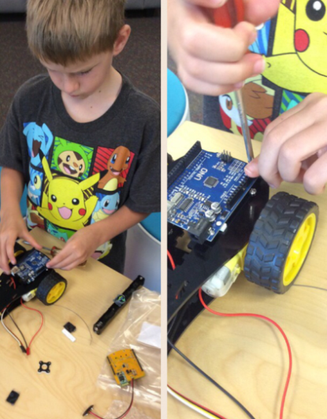
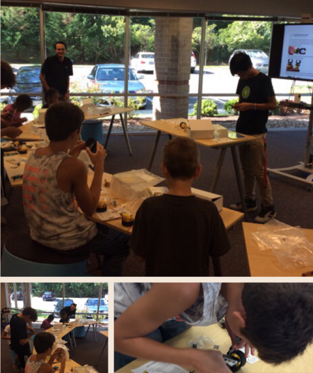
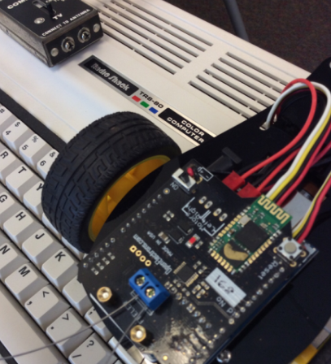
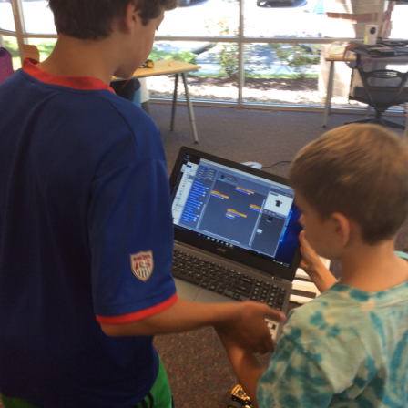
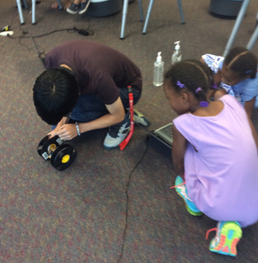
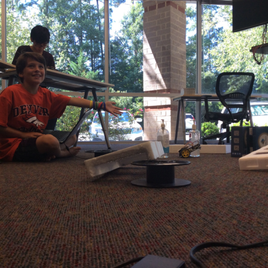
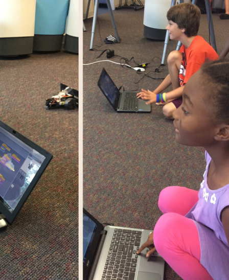
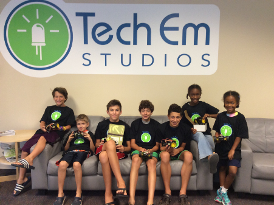
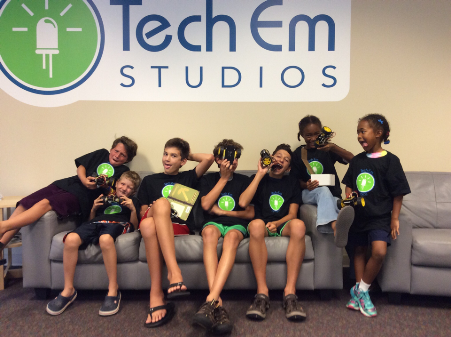

Robot Camp
Josef Seiler Chris Kefalas, 2016-08-22, Classes
Josef Seiler Chris Kefalas, 2016-08-22, Classes
Students started their robot camp with new friends and a plethora of unattached hardware: motors, wires, screws, chasis plates, battery holders and more!
The first part of camp entailed assembling all these parts using screwdrivers and determination. As the campers were guided through the process of putting together their BombiniBots, they were given lessons on each parts' purpose in the make of the robot: the function of each wire connection, which screws held what, and which motor turned this way and that, and how.
 
Once completely assembled and with the help of instructors and interns, campers hooked up their robots to computers via bluetooth or directly and made adjustments to their bots accordingly to ensure proper connections. They learned they could control the movements of their robots by having them connect to their computers wirelessly (bluetooth) or directly connect them to upload written code.
When the campers' bots paired using bluetooth, the robot movements could be controlled using a Scratch based programming environment. This is a drag-and-drop style of programming. To familiarize themselves with this way of coding, campers learned similar programming concepts by using two other apps, Hopscotch and Lightbot.
From provided lessons, campers learned the basics of coding/programming to make coding their robot's movements a breeze. For these robots, a program is a series of instructions written (or 'dragged-and-dropped') to have the robot move in particular directions; also, to complete various tasks! These tasks ranged from escaping a maze of desktop computers and TRS-80s, to racing another robot to save a 3D printed robot figure!
 
When connected via bluetooth, students can control their robots using the scratch based program. They set up instructions to have keystrokes control its movements, or they set up instructions to have the robots complete a list of commands.
When the robots are connected directly to the computer, code can be uploaded straight to the robots' arduino compatible board. Once uploaded, the robot was turned on and it was able to run through each step of the uploaded code. This was useful when having the robots move autonomously, i.e. by themselves. This is the 'Roaming' code example. While compelting this program, if the robot's whiskers collided with an object, it would make the adjustments neccessary to move around that object. This is similar to how autonomous vacuum cleaners do their job. While navigating through the maze autonomously, campers had to tweak their code to have it complete the maze smoothly.
 
BombiniBot has two motors and two tentacles. You can control the speed and direction of motors and read the tentacle values through your program. It also has an LED on top. You can control the blinking of this LED from your Scratch program. (You can turn it ON, blink it at different speeds or turn it OFF).
BombiniBot runs on 6 AA batteries. The battery holder is mounted with Velcro in the BombiniBot belly.
You can use several strategies for turning:
You can run one motor slower than the other, and as a result the robot will turn in the direction of the slower motor.
For sharper turn: stop one motor and run the other motor, this results in a sharper turn in the direction of stopped motor.
Precise sharp turn: run one motor in forward direction and the other in reverse direction, this results in the BombiniBot turning sharply in the direction of the reverse motor.
Steps to take to continue coding your robot at home are outlined below:
Download the Scratch based programming environment from mindsensors.com and choose the windows link or the mac link depending on your operating system.
i) This will download as a compressed (zip) file, so unzip the folder once it is done downloading.
i) The folder will shown as 'BombiniBotWin' or 'BombiniBotMac'
Download the Arduino drivers here
i) Scroll down till you see DOWNLOAD, select this, then select the download file for Arduino CH430 Drivers. Unzip the folder once it has completed downloading.
i) This will greatly help with pairing the robot successfully.
Download the Arduino Environment on mindsensors.com Unzip the folder once it has completed downloading.
i) You will use this when programming your Arduino Compatible Board. i) The folder will be shown as 'arduino-1.6.3-windows' or 'arduino-1.6.3-mac'
Turn your robot off. If the LED light on your is blinking fast, your robot is ready to pair. If the LED is solid red or is blinking slow, follow the troubleshooting steps below
Further issues could be due to the 'whiskers' or antennae on the robot.
From the mindsensors.com overview of the BombiniBot, here is a close-up of the whiskers' location and a bit on what they do1:


Challenge One:
Get yourself familiar with Scratch, and the different commands you can issue your robot. For your first challenge, navigate through the obstacle course. Program one long Scratch program to make it through the whole course.
If you are having trouble, trying using a pencil, and paper and writing down and drawing the route your robot will need to take to navigate the course. As well as making sure to test your program as you go along to work out any of the bugs early on!
Bonus: Navigate through the obstacle course, turn around, and navigate back through it returning to where you started!

Challenge Two:
Using the Arduino IDE, load up the Roam example program onto your BombiniBot. This program makes your Bombini roam anywhere until it bumps into something, which triggers it to back up, and continue on it's path.
Currently when it backs up, it will back up in the same direction, no matter which whisker was triggered.
Program your Bombini to back up to the left when the left whisker is triggered, and to the right when the right whisker is triggered.
Bonus: Switch it around so left reverses right, and right reverses left! Also try to incorporate a 360 into your reverse algorithm!
We hope our campers enjoy their robots and have a great rest of the summer!
 
Thanks!
The Tech Em Studios Team
mindsensors.com ↩